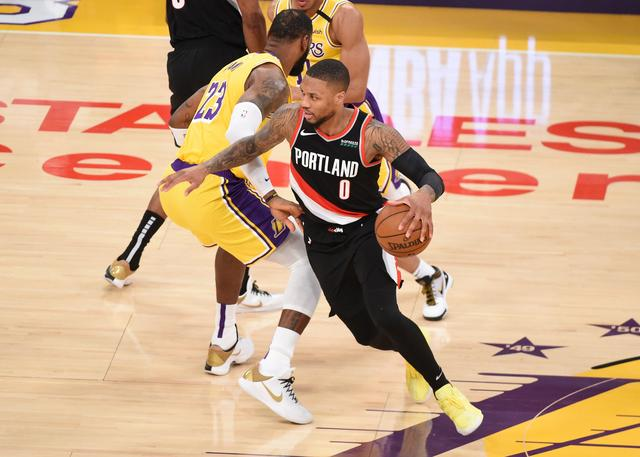

北京时间5月27日，Clutchpoint消息，落后西部第8的灰熊队3.5个胜场， 让开拓者的季后赛希望岌岌可危。接受雅虎记者克里斯-海恩斯采访时， 利拉德表示，感觉外界更想看开拓者和湖人在首轮交手。

他说：“我认为这组对阵（湖人VS开拓者）大家更想看，不是说没人想看孟菲 斯。他们是西部第八，在且第八呆了很长时间，他们配得上那个位置，这你 无法夺走。他们打得很努力，他们的比赛让人兴奋，他们有很多年轻才俊。 湖人打他们稳了，灰熊今年赢过湖人，他们已经输无可输。我觉得两个对手 都够湖人忙一阵的，但我觉得我们更难对付 ，因为要考虑到经验和过去的 交手。不久之前我们在洛杉矶交手了一次，显然我打了非常出色的一场比赛 ，我们赢下了一场比分接近的比赛。季后赛我相信他们会制定几套比赛计划 ，不让那种事发生。但是我想竞争，那是我们的愿望。”
本赛季29岁的利拉德场均为开拓者得到28.9分7.8助攻4.3篮板，他极有希望 第五次入选最佳阵容。